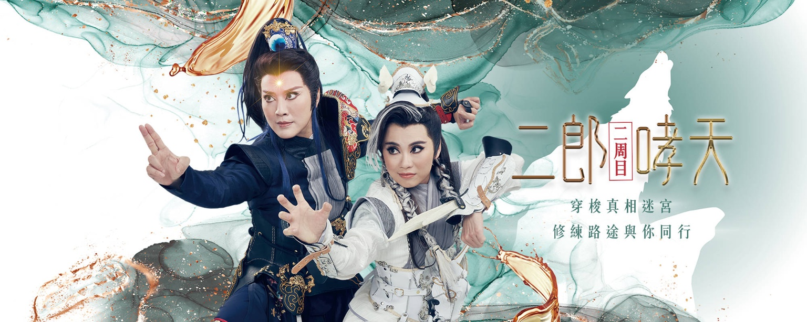

奇巧胡撇仔劇場 · 第三號作品 · 2021
二郎哮天
編劇・導演｜劉建幗

胡撇仔系列第三號作品《二郎哮天》，首度將電玩遊戲中「二周目」概念導入戲曲，以楊戩和哮天犬雙視角輪番搬演，一窺雙角色內心與天神交戰的奇幻世界。共同陪伴故事主角在那神、仙、妖、魔、人、鬼「六界」共存的時代探尋自我，綜觀親情、夥伴情誼的情感流動！
天界戰神楊戩，在追緝混血妖犬哮天途中發現人間有異，一人一犬組隊追查真相。穿梭在真相迷宮中，楊戩和哮天的自我認同，產生了極大的變化，終於在神秘駭客的幫助下潛入夢境解開謎團，大鬧天宮……